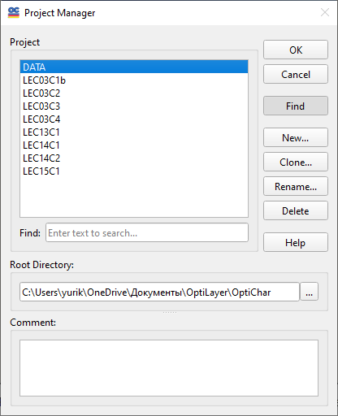

Problem Directory
OptiChar is structured around discrete database directories, enabling users to store all data related to specific problems in uniquely identified directories on their hard disk. These directories are referred to as Problem Directories. Each Problem Directory contains databases for measurement data, substrates, layer materials, and layer models. The extensive entry and editing options in OptiChar allow users to easily create and modify data files.
OptiChar supports separate configurations and environments for each Problem Directory. It saves the configuration and environment status upon closing the directory after you finish working with it. When you reopen the same directory, both the configuration and environment are automatically restored to their last saved state. Additionally, Problem Directories are compatible with all other programs in the OptiLayer family, allowing for the seamless use of common files across all OptiLayer applications.

The Problem List Box in this window displays the existing Problem Directories.
To select a different directory, simply choose it from the list and press the OK button. You may be prompted to save your current data before switching to a new directory.
To create a new directory, enter its name in the input field at the top of the window and press the OK button.
The Comment field at the bottom of the Problem Directory dialog allows you to store detailed descriptions for each Problem Directory. There is no character limit for the text in the Comment field.
Notes:
The Problem Directory dialog can be resized if necessary. To resize the dialog, use the special grip located at the bottom right corner.
The Find button activates the Find panel, which assists in searching for a folder by its specified name.
The Clone… button opens an additional dialog for creating a New Problem Directory. This function enables users to create a copy of the currently selected Problem Directory.
The Rename… button enables users to rename the selected Problem Directory. A small dialog will appear below, prompting the user to specify the new name.
The Delete operation allows you to delete the currently selected Problem directory. Please note that this operation is irreversible and should be confirmed before proceeding. Ensure that you truly wish to delete this directory, as recovery will not be possible.
The Browse dialog for selecting a new Root Directory is shown below:
To choose a new OptiLayer Root Directory, press the Browse… button. This action will invoke the Select Directory dialog box, allowing you to navigate and select your desired directory.